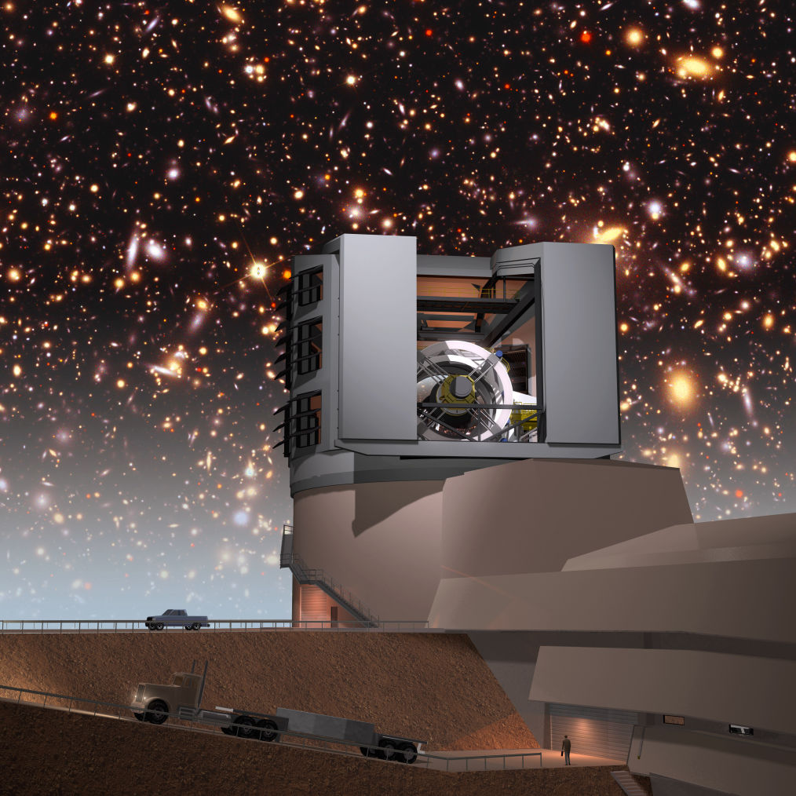
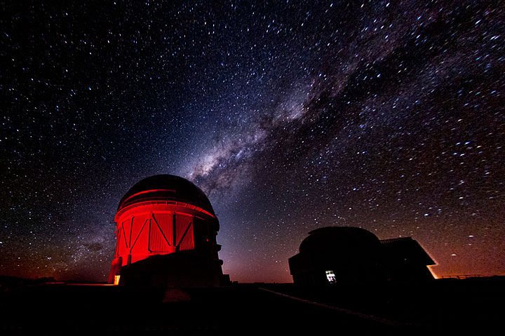
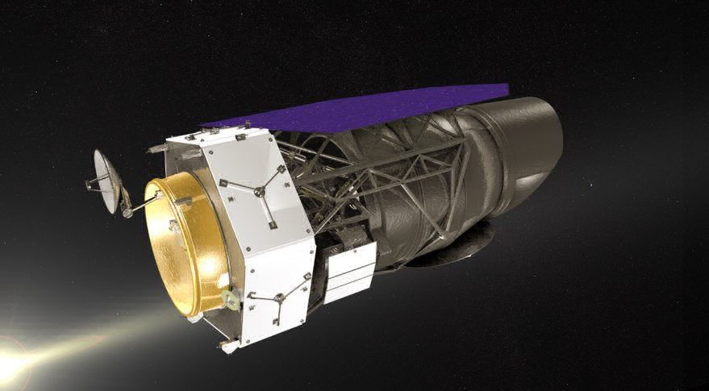
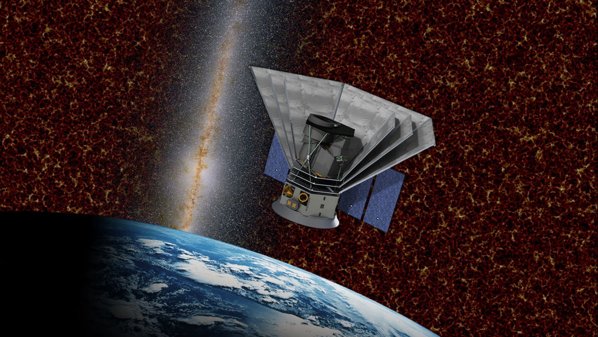
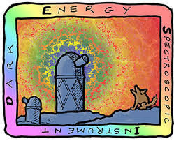

Rubin Observatory's LSST will commence science operations for the main survey in 2023, imaging more than 18,000 square degrees in 6 optical bands to an unprecendented depth over the following 10 years. Already the LSST Year 1 data will cover ~15,000 deg^2 to i-mag 24.3, a fantastic data set for cosmological discoveries. Learn more about LSST...
The DESC is one of the LSST science collaborations and its main target is to address the mystery of cosmic acceleration, i.e. the fact that the expansion of the Universe is accelerating. Discovered in 1998, cosmic acceleration (frequently termed dark energy) remains an unexplained fundamental physics problem, which might hint at a new energy density component or at modifications to our understanding of gravity. Our lab is deeply involved in DESC science preparation and planning and several cosmology projects are centered around LSST data. Learn more about DESC...
The exact survey strategy of LSST is one of the hot topics across all LSST science collaborations. Our lab is exploring the cosmology science return as a function of area, depth, systematics, overlap with other surveys. Emphasis is on maximizing the science return during the early phase of the survey, i.e. for the Year 1 and Year 3 analysis.
Several cosmological probes can be extracted from the LSST data, such as weak lensing, galaxy clustering, galaxy clusters and cross-correlations thereof. Modeling these multi-probe data vectors as a function of cosmological and systematics parameters is challenging and we explore several different probe combinations in order to maximize information return and minimize the effect of systematics.
LSST will overlap in area and timing with several other cosmological endeavors that collect synergistic data sets. Modeling the joint analyses of LSST in combinations with e.g. Roman, SPHEREx, DESI (see below), but also with experiments from the Cosmic Microwave Background (CMB), e.g. Simons Observatory and CMB-S4 is one of the core projects within our lab.

The DES has completed its survey operations in 2019 and has imaged 5,000 square degrees of the night sky in 5 optical bands to a depth of i-mag ~24. The DES Collaboration is focussing on the science analyses of this exciting data set and will continously publish results in cosmology, galaxy formation, transients, Milky Way, and Solar System science over the coming years.
DES data provides an exciting opportunity to explore cosmic acceleration now and it is an ideal testing ground for the LSST analysis, in particular for LSST Year 1, which is comparable in depth to DES. Learn more about DES...
We are working on extending the joint weak lensing and galaxy clustering analysis of DES Y1 data to include galaxy clusters and CMB-lensing (and their cross-correlations) in the analysis of future data sets, in particular DES Y3 and Y6.
Baryonic physics pose one of the large uncertainties in inferring cosmology from weak lensing and other large-scale structure probes. We are exploring mitigation strategies for
Are different cosmological probes in tension or not? This fundamental question requires precise modeling and inference and it requires to run a large amount of simulated likelihood analyses for a given experiment. We are running such high-precision likelihood analyses to assess whether the different probes measured by DES data are in tension or not.

The Roman Space Telescope is a NASA observatory with multiple science goals ranging from dark energy, galaxy formation, astrophysics, to exoplanets. The telescope has a 2.4m primary mirror, which is the same size as the Hubble Space Telescope's primary mirror, but it can image 100x the area of a Hubble image. Scheduled for launch in 2025 it has a primary mission of 5 years, which can be extended based on community science interests.
Roman's cosmology survey is composed of a wide-field imaging, a wide-field spectroscopic, and a supernova component. The combination of multi-band space-based imaging and deep grism spectroscopy will allow for exquisite systematics control for weak lensing, galaxy clustering, and galaxy clusters based probes.
Learn more about Roman ST.
The combination of imaging and spectroscopic capabilities of WFIRST allows for a large variety of cosmological probes that can be combined to enhance the constraints on our cosmological world model. Modeling these observables and their correlations including their systematics is one of the core research aspects of our group.
Optimizing WFIRST's survey strategy with respect to cosmological science cases is a complex endeavor and requires careful consideration of systematical and statistical uncertainties and synergies with other overlapping surveys (LSST, DESI, SPHEREx, CMB experiments). We are exploring several survey strategies and quantify the science return for the different scenarios.

The SPHEREx mission, part of NASA's Explorer Program, will explore the beginning of the universe, the history of galaxy formation, and the role of interstellar ices during the birth of new stars and planets, while providing a unique all-sky data set for astronomy. It will survey the entire sky four times in optical and infrared light, capturing detailed spectral information about hundreds of millions of stars and galaxies. The two-year mission funded at $242 million (not including launch costs) is targeted to launch in 2023. Learn more about SPHEREx
SPHEREx will map the 3D spatial distribution of galaxies across the sky with near-spectroscopic precision. This clustering signal of galaxies can be used to constrain different dark energy and modified gravity models, especially when combined with exquisite imaging data, e.g. from LSST.
One of the core science cases of SPHEREx is to constrain deviations from Gaussianity of the primordial density field using measurements of late time galaxy bias, i.e the connection between the dark and luminous matter density field. We are working on developing the corresponding analysis framework that will give us a glimpse of the very early physics in the universe.

The Dark Energy Spectroscopic Instrument (DESI) will map the 3-dimensional distribution of 10s of millions of galaxies thereby constraining the effects of dark energy on the geometry and growth of structures of the Universe matter density field. The DESI instrument will implement a new highly multiplexed optical spectrograph on the Mayall Telescope at Kitt Peak National Observatory, 55 miles from Tucson. A new optical corrector design creates a very large, 8.0 square degree field of view on the sky. The focal plane accommodates 5,000 small computer controlled fiber positioners, which can be reconfigured for the next exposure in less than two minutes while the telescope slews to the next field. Learn more about DESI
While the exact overlap of the LSST and DESI footprint is still unclear, synergies between these two endeavors are very promising. We are interested in developing the theoretical tools to combine imaging and spectroscopic information and to properly include the correlated information of 3D and 2D clustering measurements in a joint analysis that also includes weak lensing and galaxy clusters.
Built with Mobirise website software